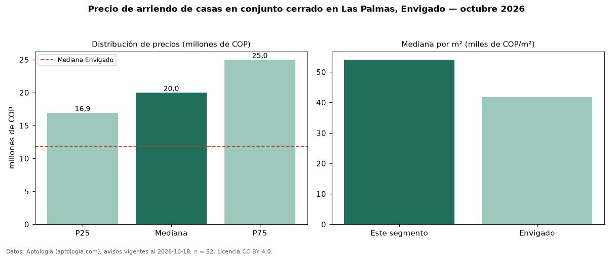

Precio de arriendo de casas en conjunto cerrado en Las Palmas, Envigado — octubre 2026
COP 20 millones al mes es el canon mediano de casas en conjunto cerrado en arriendo en Las Palmas, Envigado (n = 52 avisos). Frente a la mediana de todas las casas en arriendo de Las Palmas (COP 19 millones, n = 72), queda 5 % por encima; este segmento reúne el 72 % de esos avisos. Por metro cuadrado, la mediana es COP 54.054/m² al mes (n = 47), 1 % por debajo del conjunto de referencia (COP 54.816/m²). El área mediana anunciada es 355 m². El segmento con más oferta es el de 3 o más habitaciones (50 avisos, mediana COP 20,25 millones). El estrato más frecuente es 6 (52 % de los avisos con estrato). La mediana de todas las casas en arriendo de Envigado es COP 11,80 millones (+69 % de diferencia). La mitad central de los avisos va de COP 16,93 millones a COP 25 millones (razón 1,5), una dispersión moderada. Datos: Aptología (aptologia.com), CC BY 4.0 — https://www.aptologia.com/casas-en-arriendo/envigado/las-palmas. Archivos: PDF, CSV con las cifras y gráfica PNG.

| Avisos únicos | 52 |
|---|---|
| Percentil 25 | COP 16.932.750 |
| Mediana | COP 20.000.000 |
| Percentil 75 | COP 25.000.000 |
| Mediana por m² | COP 54.054 |
Fuente: avisos vigentes de portales inmobiliarios recopilados por Aptología, deduplicados (mínimo 30 avisos únicos por celda). Precios pedidos, no cerrados. Fecha: 2026-10-18.